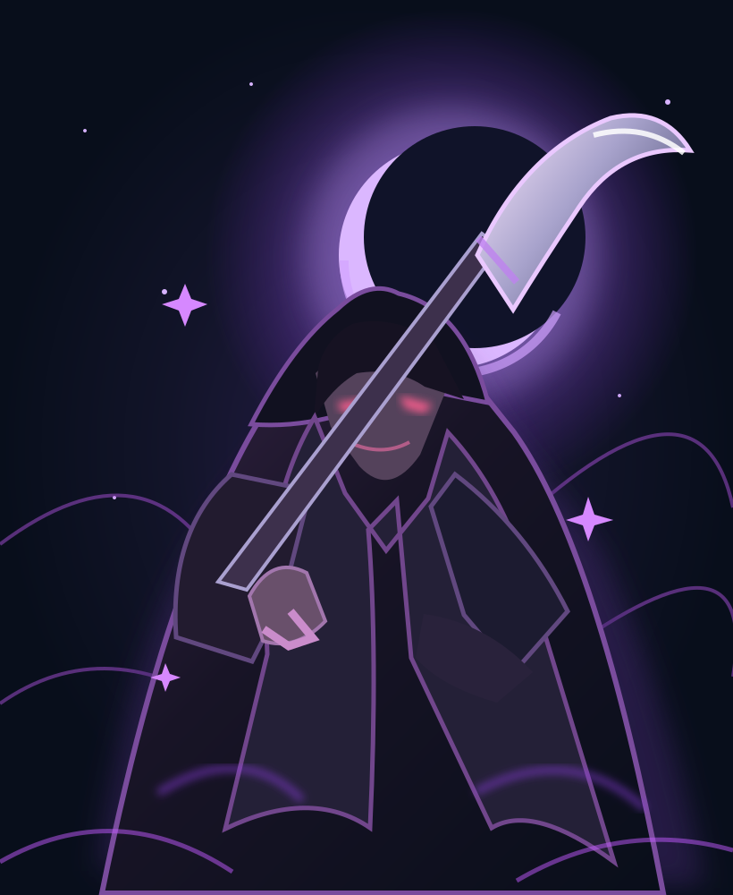
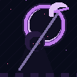

SangramentoBleeding
Ataques aplicam acúmulos de Sangramento que causam dano contínuo aos inimigos.Attacks apply stacking Bleeding effects that deal damage over time.
15 NOV 2026 · V0.8.6.9 · BETA ANDROIDNOV 15, 2026 · V0.8.6.9 · ANDROID BETA
Uma nova heroína demoníaca entra em Astraryx. Empunhando sua foice, Morgana acumula Sangramento, acelera seus ataques e desencadeia a Tempestade das Almas. A atualização também otimiza os combates da Arena PvP.A new demonic heroine enters Astraryx. Wielding her scythe, Morgana stacks Bleeding, accelerates her attacks, and unleashes Soul Tempest. This update also optimizes PvP Arena battles.
APK Beta publicado no GitHub. Instalação e atualização dependem da compatibilidade da assinatura Android.Public beta APK on GitHub. Installation and upgrading require compatible Android signing.

NOVA HEROÍNA · COMBATENEW HEROINE · COMBAT
Morgana combina pressão crescente, dano contínuo e golpes de foice em área. Seu kit favorece combates prolongados e uma construção voltada a velocidade de ataque, chance crítica e dano crítico.Morgana combines ramping pressure, damage over time, and sweeping scythe attacks. Her kit rewards prolonged battles and builds focused on attack speed, critical chance, and critical damage.
Ataques aplicam acúmulos de Sangramento que causam dano contínuo aos inimigos.Attacks apply stacking Bleeding effects that deal damage over time.
A velocidade de ataque aumenta conforme o combate se prolonga.Attack speed grows as the battle continues.
Habilidades ofensivas alcançam múltiplos inimigos e espalham a pressão sobre a formação adversária.Offensive abilities hit multiple targets and spread pressure across the enemy formation.
Um recurso de controle permite interromper a ação inimiga em momentos decisivos.Crowd-control capability can interrupt enemies at critical moments.
Uma habilidade devastadora acompanhada de novos efeitos visuais próprios da Morgana.A devastating ability with new visual effects unique to Morgana.
Priorize velocidade de ataque, chance de crítico e dano crítico para aproveitar seu estilo de jogo.Prioritize attack speed, critical chance, and critical damage to complement her playstyle.

EFEITO TEMÁTICO ANIMADOANIMATED THEME
Uma animação promocional em pixel art acompanha a chegada da Ceifeira do Eclipse. As animações e efeitos reais da Morgana estão no APK.A promotional pixel-art animation accompanies the Eclipse Reaper's debut. Morgana's actual animations and effects are included in the APK.
Esta animação é ilustrativa; não representa uma gravação de combate.This animation is illustrative; it is not a recorded battle.
NOTAS DO PATCH · V0.8.6.9PATCH NOTES · V0.8.6.9
Ajustes internos no processamento dos combates ranqueados, com foco em fluidez, desempenho e estabilidade durante as partidas.Internal improvements to ranked combat processing, with a focus on smoother battles, performance, and stability.
Seis novos ícones de habilidade, novos efeitos visuais de Morgana e três retratos reformulados.Six new skill icons, new Morgana visual effects, and three refreshed portraits.
Sete novas foices entram no catálogo da Oficina. Revisões na apresentação de equipamentos e consistência dos itens.Seven new scythes arrive in the Workshop catalog, alongside equipment presentation and item consistency revisions.
Mais verificações de combate, textos e traduções revisados, além de testes de compatibilidade dos novos conteúdos.More combat tests, reviewed texts and translations, and compatibility checks for the new content.